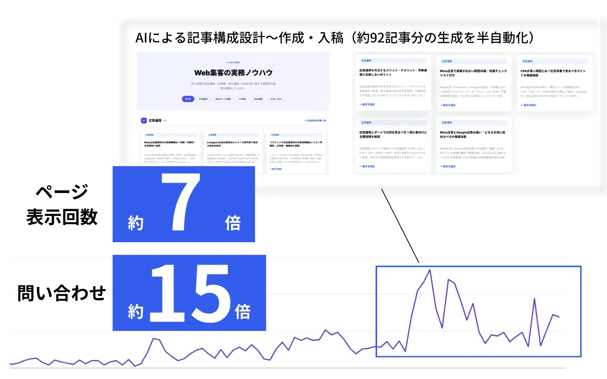

この記事でわかること
- 問い合わせ数が「本当に頭打ちか」を確かめる3つの点
- 伸びていた問い合わせが止まる、よくある原因5つ
- 入口別の流入数と転換率に分けて、詰まりを見つける手順
- 原因別の打ち手と、どれから手をつけるかの決め方
広告や記事を続けてきて、しばらくは問い合わせが増えていたのに、ここ数か月は横ばいのまま。予算を増やすべきか、別の施策を始めるべきか、判断に迷う場面です。この記事では、頭打ちの原因を分解して見つけ、打ち手を選ぶまでの手順を整理します。
結論：問い合わせ数の頭打ちは、まず季節の波や計測の取りこぼしではないかを確かめます。そのうえで、問い合わせを「入口ごとの流入数×転換率」に分けると、止まっている場所が見つかります。流入が止まっているなら需要の上限か入口の偏り、転換率が下がっているならページや競合、件数を絞っているなら受け皿が原因です。今の施策の量を増やす前に、原因に合った打ち手を選んでください。
まず確かめる：本当に頭打ちか
「最近、問い合わせが増えない」と感じたときに、最初にやるべきことは打ち手を考えることではなく、本当に頭打ちなのかを確かめることです。次の3つのどれかに当たると、頭打ちに見えて実は違う、ということがよくあります。
| 見え方 | 実際に起きていること | 確かめ方 |
|---|---|---|
| 季節の波 | 業種によって、問い合わせが増える月・減る月が毎年ある。前月と比べると止まって見える | 前年の同じ月と比べる。少なくとも12か月分を並べる |
| 計測の取りこぼし | フォームの送信は増えているのに、通知メールが届かない、電話の問い合わせを数えていない | フォームの管理画面・受信箱・電話の記録など、数える元を1つずつ突き合わせる |
| 数え方の変更 | サイトのリニューアルやタグの変更で、コンバージョンの数え方が変わった | 変更日の前後で数字の段差がないかを見る |
計測の取りこぼしが疑わしい場合は、問い合わせフォームのメールが届かない原因と確認手順や、電話問い合わせの計測方法｜通話コンバージョン設定で先に点検してください。数字の土台がずれたまま打ち手を選ぶと、効かない施策にお金を使ってしまいます。
ポイント：頭打ちかどうかは、前年同月比で3か月以上、伸びが止まっているかで判断するのが、当社が実務で使っている目安です。1〜2か月の停滞は、季節や偶然の波であることが少なくありません。
問い合わせ数が頭打ちになるよくある原因5つ
しばらく伸びていた問い合わせが止まるとき、当社が支援の中で見ることが多い原因は次の5つです。「来ない」ではなく「伸びが止まった」ときに起きやすいものに絞っています。
| 原因 | 起きていること | よく出るサイン |
|---|---|---|
| 1. 入口の需要を取り切った | 狙っている検索語句や広告の配信先にいる人の数には上限がある。上位表示や配信を広げきると、それ以上増えない | 検索の順位は高いまま、表示回数が横ばい。広告は予算を増やすと単価だけ上がる |
| 2. 入口が1つに偏っている | 問い合わせの大半が1つのチャネル（広告だけ、紹介だけ、1つの記事だけ）から来ている | その1つが止まると全体が止まる。ほかのチャネルからの問い合わせがほぼない |
| 3. 転換率が落ちて、流入の増加を打ち消している | アクセスは増えているが、問い合わせにつながる割合が下がっている。関係の薄い流入が増えた、ページの情報が古くなったなど | セッション数は増えているのに、問い合わせ数は横ばい |
| 4. 競合や市場が変わった | 同じ検索語句や広告枠に競合が増えた、市場全体の関心が下がった | 自社の順位やクリック率が下がった。業界全体の検索の関心も下がっている |
| 5. 受け皿・対応が追いつかない | 返信が遅い、対応できる件数に限りがあり、営業側で絞っている。価格や条件が合わない層しか来ない | 問い合わせは横ばいだが、返信の遅れや取りこぼしの相談が社内で出ている |
原因1と4は「外の要因」、原因2・3・5は「自社の作りの要因」です。外の要因なら入口を増やす方向、自社の要因なら作りを直す方向と、打ち手がまったく違います。次の手順で、どちらに当たるかを見分けます。
詰まりを見つける分解の手順
問い合わせ数は、「入口ごとの流入数 × 問い合わせにつながる割合（転換率）」の合計に分けて考えると、どこで止まっているかが見えます。次の順で進めてください。
分解の順番
- 手順1：問い合わせを入口別（自然検索・広告・SNS・紹介・指名検索・その他）に分け、直近12か月の月別の件数を表にする。どの入口が止まっているかを見る
- 手順2：止まっている入口について、流入数（セッション数）と転換率を月別に並べる。流入が止まっているのか、転換率が下がっているのかを分ける
- 手順3：自然検索が止まっているなら、Search Consoleで表示回数・クリック数・掲載順位を月別に見る。表示回数が横ばいなら需要の上限（原因1）、順位やクリック率が下がっているなら競合（原因4）を疑う
- 手順4：Googleトレンドで、主な検索語句の関心の推移を前年と比べる。業界全体が下がっているなら市場の変化、業界は伸びているのに自社だけ止まっているなら自社の要因
- 手順5：広告が止まっているなら、予算を増やしたときに件数が増えるか、単価だけが上がるかを見る。単価だけ上がるなら配信先の上限が近い（原因1）
- 手順6：問い合わせの中身（業種・規模・相談内容）と、返信までの時間を直近3か月分見直す。対応しきれていない、合わない相談が増えているなら原因5
手順3で使う表示回数は、Googleの検索結果で自社のリンクが表示された回数で、掲載順位は表示されたときの平均の順位です。Googleは、掲載順位は単独の数字より推移や急な変化を見るよう案内しています。（出典：表示回数、掲載順位、クリック数とは｜Search Console ヘルプ）手順4のGoogleトレンドの値は検索の件数そのものではなく、その時期・地域の検索全体に占める割合を0〜100に直した相対的な値です。（出典：FAQ about Google Trends data｜Trends Help）Googleは、自社の検索語句の推移を業界やカテゴリの推移と比べ、変化が業界全体のものか自社だけのものかを見分ける使い方を紹介しています。（出典：Google トレンドを使ってみる｜Google 検索セントラル）
なお、Search Consoleのクリック数とGA4の自然検索のセッション数は、数え方が違うため一致しません。Googleは、検索での表示やクリックはSearch Console、サイトに来てからの動きはGoogleアナリティクスと、役割を分けて使うよう説明しています。（出典：Search Console と Google アナリティクスのデータを SEO に使用する｜Google 検索セントラル）
注意：入口別の件数は、問い合わせフォームの「何で知りましたか」の回答と、計測の数字の両方で見てください。指名検索で来た人の多くは、実際には紹介やSNSで知っています。計測の数字だけでは、本当の入口が見えないことがあります。
原因別の打ち手
原因1：需要を取り切った
隣の需要に入口を足す
- 今の検索語句の周りにある、より具体的な悩み・業種・地域の言葉に記事やページを足す
- 広告は、新しい配信先や訴求で別の層に届ける
- 同じ層には、比較・相談の前の段階（情報集め）から接点を作る
原因2：入口の偏り
2本目の入口を育てる
- 今の主力と性質の違うチャネルを1つ選ぶ（広告が主力なら検索、検索が主力なら紹介やSNS）
- 成果が出るまでの期間を決めて、主力の予算の一部を回す
- 既存の顧客からの紹介や再相談の仕組みも入口として数える
原因3・4：転換率・競合
比べられたときの見え方を直す
- 流入が増えたページの内容と、問い合わせへの導線を見直す
- 競合と比べられたときに選ばれる理由（実績・料金の目安・対応範囲）を書く
- 情報が古いページを更新する
原因5：受け皿
対応の仕組みを先に整える
- 返信の期限と担当を決める
- 合わない相談を減らすため、対象と条件をページに明記する
- 増やす前に、対応できる件数の上限を確かめる
原因1の「隣の需要に入口を足す」は、当社自身のオウンドメディアでも取り組んでいる方法です。実際に検索されている具体的な悩みの言葉に答える記事を積み上げることで、検索での表示と問い合わせを増やしてきました。

この例は、既存の入口を強くするのではなく、新しい入口を足して全体の母数を広げた事例です。頭打ちの原因が需要の上限にあるときは、同じ言葉で順位を上げ続けるより、入口の数を増やす方が伸びしろが大きくなります。記事を増やしても問い合わせにつながらない場合の切り分けは、オウンドメディアで問い合わせが来ない原因と確認手順で解説しています。
打ち手の選び方：どれから手をつけるか
原因が複数見つかったときは、次の順で優先順位を決めると、むだが少なくなります。
| 順番 | 打ち手 | 理由 |
|---|---|---|
| 1 | 計測と受け皿を整える（取りこぼし・返信の遅れ） | 費用が小さく、すでに来ている問い合わせを失わずに済む。ほかの打ち手の効果も正しく測れるようになる |
| 2 | 転換率を直す（ページ・導線・選ばれる理由） | 今の流入のままで件数が増える。流入を増やす前にやると、あとの施策の効きも良くなる |
| 3 | 隣の需要に入口を足す | 母数を広げられる。検索の記事は成果が出るまで数か月かかることが多いので、早めに始める |
| 4 | 新しいチャネルを育てる | 偏りの解消になるが、立ち上げに時間と費用がかかる。期間と撤退の基準を決めて始める |
チャネルごとの予算の分け方は、広告・SEO・SNSの予算配分の決め方｜チャネル別の役割と比率の目安で詳しく整理しています。
数を追うのをやめる判断もある
問い合わせ数が頭打ちでも、売上や成約が伸びているなら、無理に数を追う必要はありません。次のような場合は、件数ではなく「成約につながる問い合わせの数」や「1件あたりの売上」を目標にした方が、事業にとって良い結果になることが多いです。
- 対応できる件数がすでに上限に近い：数を増やすと、返信の遅れや対応の質の低下で、かえって成約が減ることがあります
- 合わない相談の割合が増えている：入口を広げるより、対象をはっきりさせて合う相談の割合を上げる方が効きます
- 既存の顧客からの売上の伸びしろが大きい：新規の問い合わせより、再購入・追加の相談・紹介の方が少ない費用で売上を作れることがあります
問い合わせは来るのに成約しない場合の見直し方は問い合わせは来るのに成約しない原因と見直し方、既存顧客から売上を作る考え方は新規獲得が頭打ちになったら？既存顧客・休眠顧客から売上を作る設計手順で解説しています。
LnXの見解
問い合わせ数が頭打ちになったとき、多くの会社は「広告の予算を増やす」「記事を増やす」といった、今やっている施策の量を増やす方向に動きます。しかし、原因が需要の上限や受け皿の限界にあると、量を増やしても件数は増えず、費用だけが増えます。まず止まっている場所を分解して見つけ、それから打ち手を選ぶことが、遠回りに見えていちばんの近道だと考えています。
また、頭打ちの原因は、広告・検索・サイト・営業の対応のつなぎ目にあることが多く、施策ごとに担当や外注先が分かれていると見落とされがちです。全体を一度に見渡して、どこから手をつけるかを決める役割が必要です。
LnXのマーケティング顧問制度では、マーケティング会社の代表が、現状の数字の整理から施策の優先順位づけ、実行のディレクションまで直接支援します。月8万円〜（税別想定）、最低契約期間は原則3か月で、1か月目に現状分析と方針設計を行います。どこで止まっているのか分からないという段階から、無料相談で課題を一緒に整理できます。
よくある質問
Q問い合わせ数が何か月横ばいなら、頭打ちと考えるべきですか？
公式の基準はありませんが、当社では前年同月比で3か月以上伸びが止まっているかを目安にしています。前月比だけで見ると、季節の波を頭打ちと見誤ることがあります。少なくとも12か月分の月別の件数を並べて判断してください。
Q広告の予算を増やせば、問い合わせは増えますか？
配信先にまだ届いていない人が多ければ増えますが、配信先の上限に近いと、単価だけが上がって件数はあまり増えません。予算を少し増やしたときに件数が比例して増えるかを確かめてから、本格的に増やすかを決めてください。
QSearch Consoleの表示回数が横ばいなのは、何を意味しますか？
今の検索語句で表示される機会が増えていないことを意味します。順位が高いまま表示回数が横ばいなら、その言葉の検索の需要を取り切りつつある可能性があります。周りの具体的な悩みの言葉に、新しい記事やページを足すことを検討してください。
Q入口を増やすなら、どのチャネルから始めるべきですか？
今の主力と性質の違うチャネルを選ぶのが基本です。広告が主力なら検索の記事、検索が主力なら紹介やSNSのように、1つが止まっても全体が止まらない組み合わせにします。成果が出るまでの期間と、やめる基準を先に決めて始めてください。
Q問い合わせ数より成約数を追うべきなのは、どんなときですか？
対応できる件数が上限に近いとき、合わない相談の割合が増えているとき、既存の顧客からの売上の伸びしろが大きいときです。この場合は、件数を増やすより、成約につながる問い合わせの割合や1件あたりの売上を上げる方が、事業にとって良い結果になることが多いです。